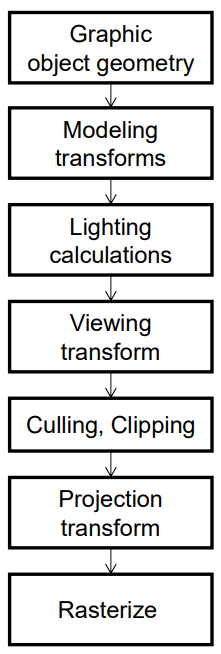
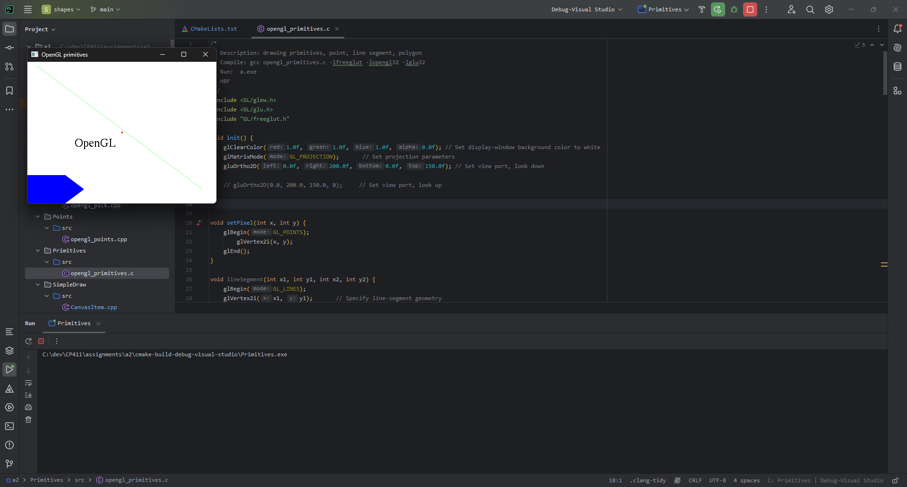
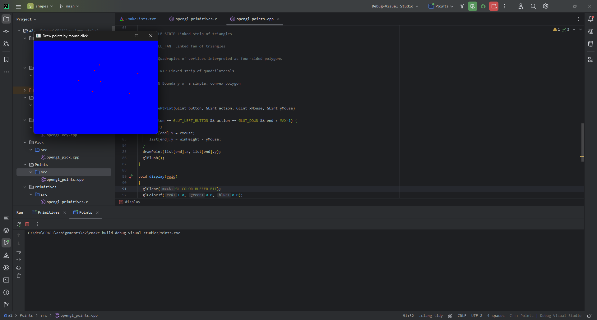

1.1 Graphics Primitives
Primitive: The term Primitive in OpenGL is used to
refer to two similar but separate concepts.
What a stream of vertices represents when being rendered
(e.g. “GL_POINTS”). Such sequences of vertices can be arbitrarily
long.
The result of the interpretation of a vertex stream, as part of
Primitive Assembly.
Processing a vertex stream by one of these primitive interpretations
results in an ordered sequence of primitives. The individual primitives
are sometimes called “base primitives”.
Paraphrased from: Official OpenGL
Wiki .
1.2 Graphics Pipeline
Object geometry defines the vertices/primitives to render.
Model transformations define the transformation to perform on the
objects.
Lighting calculations determine how light affects the objects.
View transformations determine any transformations to how the final
image should be displayed.
Culling/Clipping skips unnecessary data.
Projection transformation projects the data.
Rasterization converts the objects to pixel data.

Diagram of the graphics
pipeline.
The following co-ordinate systems are used during each stage of the
graphics pipeline:
Model Co-ordinate System (MCS). Local co-ordinates
of the model.World Co-ordinate System (WCS). Global co-ordinates
of all objects.Viewer Co-ordinate System (VCS). Local co-ordinates
of the viewer.Normalized Device Co-ordinate System (NDCS). Screen Co-ordinate System (SCS).
The following transformations are applied:
Model Transformations
Scaling, rotation, translation.
View Transformations
Position/rotation/zoom of camera.
Projection Transformations
Projects objects into the plane.
Display Transformations
Maps the view to the display window.
1.4 Scan Conversion
A scan conversion algorithm converts primitive data into pixel
data.
1.5 Hand-on Midpoint Algorithm
The data is available in this file: Pixel Data
The code used to generate the data: Code
2.1 OpenGL Primitives

OpenGL Primitives
2.2 Interactive Graphics

OpenGL Points
2.3 Bitmap File I/O
Output
3.2 Data Structures
3.3 Draw Rectangle
3.4 Draw Circle
3.5 Edit Features
3.6 Save/Open SVG Files
3.7 Export to Bitmap File
3.8 Circle & Square Artwork
3.9 Program Design
References
CP411-A2
Official
OpenGL Wiki